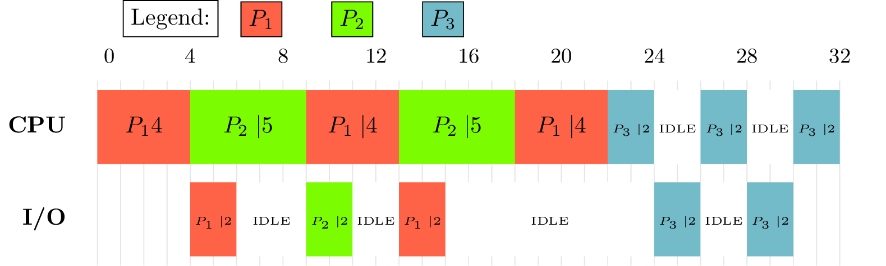

\documentclass{standalone}
\usepackage{pgfgantt}
\definecolor{blue}{HTML}{74BBC9}
\definecolor{yellow}{HTML}{F7E967}
\definecolor{green}{HTML}{7CFC00} % lawn green
\definecolor{red}{HTML}{FF6347} % tomato
\begin{document}
%\begin{figure}
\begin{ganttchart}[
x unit=0.35cm,
y unit chart=1.4cm,
canvas/.style={draw=none,fill=none}, % remove canvas borders, etc
vgrid={*1{draw=black!12}}, % vertical gray lines every unit
inline, % draw bars inline
group/.style={draw=none,fill=none}, % remove group borders, etc
bar top shift=0.1, % give bar 10% padding top/bottom
bar height=0.8, % bar size 80% of vertical space
y unit title=0.5cm, % crop titles a little smaller
title/.style={draw=none,fill=none}, % remove title borders, etc
include title in canvas=false, % no vertical grid in title
milestone inline label node/.append style={left=5mm} % see if I can include milestones
]{-1}{32}
\gantttitle{0}{3}
\gantttitle{4}{4}
\gantttitle{8}{4}
\gantttitle{12}{4}
\gantttitle{16}{4}
\gantttitle{20}{4}
\gantttitle{24}{4}
\gantttitle{28}{4}
\gantttitle{32}{4}\\
% Note that 2 units = 4 in the diagram
\ganttgroup[inline=false]{CPU}{0}{1}
\ganttbar[bar/.style={fill=red}]{$P_1$4}{0}{3}
\ganttbar[bar/.style={fill=green}]{$P_2\mid$5}{4}{8}
\ganttbar[bar/.style={fill=red}]{$P_1\mid$4}{9}{12}
\ganttbar[bar/.style={fill=green}]{$P_2\mid$5}{13}{17}
\ganttbar[bar/.style={fill=red}]{$P_1\mid$4}{18}{21}
\ganttbar[bar/.style={fill=blue}]{\tiny{$P_3\mid$2}}{22}{23}
\ganttbar[bar/.style={fill=white}]{\tiny {IDLE}}{24}{25}
\ganttbar[bar/.style={fill=blue}]{\tiny{$P_3\mid$2}}{26}{27}
\ganttbar[bar/.style={fill=white}]{\tiny {IDLE}}{28}{29}
\ganttbar[bar/.style={fill=blue}]{\tiny{$P_3\mid$2}}{30}{31}
\\
% \ganttmilestone{$T_4-16 =8$}{18}
\ganttgroup[inline=false]{I/O}{0}{1}
\ganttbar[bar/.style={fill=red}]{\tiny{$P_1\mid$2}}{4}{5}
\ganttbar[bar/.style={fill=white}]{\tiny{IDLE}}{6}{8}
\ganttbar[bar/.style={fill=green}]{\tiny{$P_2\mid$2}}{9}{10}
\ganttbar[bar/.style={fill=white}]{\tiny{IDLE}}{11}{12}
\ganttbar[bar/.style={fill=red}]{\tiny{$P_1\mid$2}}{13}{14}
\ganttbar[bar/.style={fill=white}]{\tiny{IDLE}}{15}{23}
\ganttbar[bar/.style={fill=blue}]{\tiny{$P_3\mid$2}}{24}{25}
\ganttbar[bar/.style={fill=white}]{\tiny{IDLE}}{26}{27}
\ganttbar[bar/.style={fill=blue}]{\tiny{$P_3\mid$2}}{28}{29}
%\ganttbar[bar/.style={fill=blue}]{2}{2}{5}
%\ganttbar[bar/.style={fill=yellow}]{6}{6}{8}
%\ganttbar[bar/.style={fill=white}]{IDLE}{25}{29}
% \ganttgroup[inline=false]{$T_{2,1}$}{0}{1}
% \ganttbar[bar/.style={fill=blue}]{1}{0}{1}
% \ganttbar[bar/.style={fill=yellow}]{7}{9}{11} \\
% \ganttgroup[inline=false]{$T_{3,1}$}{0}{1}
% \ganttbar[bar/.style={fill=yellow}]{4}{0}{2}
\node (a) [fill=blue,draw,anchor=south] at (current bounding box.north){$P_3$};
\node (b) [fill=green,draw,anchor=south] at ([xshift=-30pt]a.south west){$P_2$};
\node (c) [fill=red,draw,anchor=south] at ([xshift=-30pt]b.south west){$P_1$};
\node (legend) [fill=white,draw,anchor=south] at ([xshift=-30pt]c.south west){Legend:};
%\node[fill=purple,draw,anchor=west] at ([yshift=-20pt]d.south west){Box North East};
\end{ganttchart}
%\caption{A flexible job shop schedule}
%\label{fig:schedule}
%\end{figure}
\end{document}